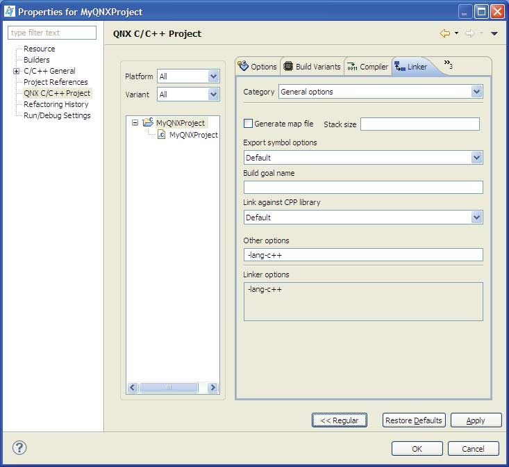

The appearance of the Linker tab changes depending on the type of category you select:
- General options (C and C++)
- Extra library paths (C and C++)
- Extra libraries (C and C++)
- Extra object files (C++ only)
- Post-build actions (C and C++)
Advanced/Regular modes
The Properties dialog can appear in two different modes: regular and advanced. By default, the dialog remembers your setting for the mode, and some tabs have either more or less information, depending on the mode you select.
To activate Regular mode, click Regular at the bottom of the dialog.

The Advanced mode for the Linker tab.
To return to Advanced mode, click Advanced.

The Regular mode for the Linker tab.
In Advanced mode, you can override various options that were set at the project level for the particular build variant you've selected. The options that you can override are:
- platform (the one specified, or all supported platforms)
- build mode (e.g. debug, release, or user-defined)
- compiler options
- linker options
For example, you can change the optimization level for a particular C++ file, specify which set of import libraries to use for a specific architecture, and so on.

Changing the optimization level for a C++ file to use a specific architecture.
During the final build, the IDE merges the options you've set for the project's general configuration with the advanced options, giving priority to the advanced settings.